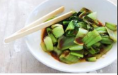
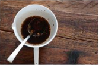

Japannese Vegetarian
Five week course in London
A five week introduction to traditional Japanese vegetarian meals, teaching tou a selection of rice and noodle dishes.

Sauces Master class
One day workshop
An intensive one-day course looking at how to create the most delicious sauces for use in a range of Japanese cookery.
Popular Recipes
Yakitori (grilled chicken)
Tsukune (minced chicken patties)
Okonomiyaki (savory pancakes)
Mizutaki (chicken stew)
Contact
Youko's Kitchen
27 Redchurch Street
Shoreditch
London E2 7DP